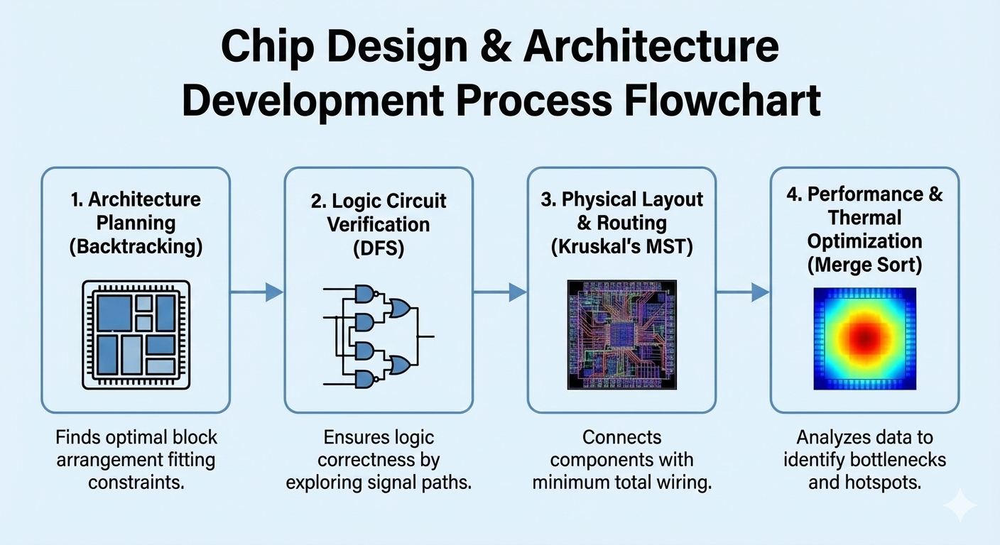

ISHITHA S
Detailed Contribution Breakdown
Infrastructure
Automated power grid monitoring & control
An automated power grid monitoring and control system is a smart infrastructure solution that continuously observes the flow of electricity across the grid and takes automatic actions to maintain stability. It uses sensors, communication networks, and intelligent algorithms to detect faults, balance loads, and optimize energy distribution. Instead of relying on manual checks, the system responds instantly to changes in voltage, current, frequency, or equipment health.
Primary: 7 (7.1,7.2,7.3)
Secondary: 9,11,13

Power Source Selection: To dynamically select the most efficient or cost-effective power source available. This could be the Solar Plant during a sunny day, or a traditional power plant when demand is high.
The Algorithm: A Max-Heap data structure is used to maintain a prioritized list of available power sources. The source at the "top" of the heap is always the best current option, allowing for instant selection.

| Operation | Best | Average | Worst |
|---|---|---|---|
| Insertion | O(1) | O(log n) | O(log n) |
| Deletion (Extract-Max) | O(1) | O(log n) | O(log n) |
| Updating Priority | O(1) | O(log n) | O(log n) |
| Retrieving Max | O(1) | O(1) | O(1) |
Building the Distribution Network:To design the physical network of power lines that connects all sectors of Samarthaka (Residential, IT Hub, etc.) with the minimum total length of cable, reducing cost and material usage.
The Algorithm: Kruskal’s Minimum Spanning Tree (MST) algorithm is used to determine the most efficient set of connections (edges) between all key locations (nodes), ensuring every sector is connected without creating any redundant loops.

| Operation | Best | Average | Worst |
|---|---|---|---|
| Sorting Edges | O(E log E) | O(E log E) | O(E log E) |
| Union–Find Operations | O(E) | O(E) | O(E) |
| Total Time Complexity | O(E log E) | O(E log E) | O(E log E) |
Power Flow Routing:To determine the best path for electricity to travel from a selected source to a specific destination (e.g., from the Solar Plant to the Hospital) to minimize power loss.
The Algorithm: Dijkstra’s Shortest Path algorithm calculates the path with the lowest total resistance or cost through the network. This ensures sensitive zones receive stable power and overall transmission losses are kept to a minimum.

Real-time Monitoring:To monitor the total power consumption of a specific area, like a residential block, in real-time and efficiently handle updates from individual smart meters.
The Algorithm: Segment TreeA Segment Tree is used to store power usage data. It allows for rapid queries of a range of data (e.g., "total usage for houses 1-100") and quick updates to individual data points, which is essential for processing data from thousands of smart meters.

Outage Detection: To instantly detect if any part of the grid has become disconnected from the main power source, allowing for immediate response.
The Algorithm: Union-Finddata structure tracks which parts of the grid are connected. If a power line breaks, the system can almost instantly determine if a sector is now in a separate, disconnected set from the main power source, triggering an alarm.

Wireless Internet tower grid
A Wireless Internet Tower Grid is a city-wide system of interconnected communication towers that deliver fast, reliable, and uninterrupted internet coverage. These towers act as digital infrastructure that ensures every home, business, institution, and public space in Samarthaka city has seamless wireless connectivity—supporting education, healthcare, transport, and smart governance.
The Wireless Internet Tower Grid for Samarthaka consists of strategically placed communication towers connected through fiber-optic backbones and microwave relay links. Each tower covers a circular or sector-shaped region, forming an overlapping mesh so there are no dead zones.
9, 11

Building the Communication Backbone: To create a robust, central network backbone that connects all major towers together using the minimum possible total length of high-speed fiber or microwave links, starting construction from a central hub.
The Algorithm: Prim's MST is used to build a Minimum Spanning Tree (MST). It starts from an arbitrary "root" tower (perhaps your main data center connection). It then iteratively adds the closest (cheapest connection) neighboring tower that isn't yet part of the backbone. This process repeats until all towers are connected, ensuring the most cost-effective, loop-free backbone structure grows outwards from the center.

Route Internet Packets: To determine the absolute fastest path for data packets to travel between any two towers in the entire grid, ensuring that no matter where a user is and which server they need to reach, the data takes the optimal route.
The Algorithm: Floyd-Warshall is an "all-pairs shortest path" algorithm. It analyzes the entire network graph and calculates the shortest path between every possible combination of source tower and destination tower. The result is a comprehensive routing table (a matrix) that the network uses to immediately know the best path for any packet, regardless of its entry and exit points in the grid.

Tower Failure Handling & Rerouting: To provide near-instantaneous recovery when a tower goes offline by immediately switching traffic to pre-calculated backup paths, minimizing service interruption for users.
The Algorithm: Hashing A Hash Table is used for ultra-fast lookups. The system maintains a table where the "key" is the ID of a specific tower, and the corresponding "value" is the pre-determined backup routing plan for that tower. When a tower failure is detected, the system hashes the failed tower's ID to instantly retrieve its backup route from the table (in O(1) constant time) and re-directs traffic without needing to recalculate the entire network topology.

Load Balancing & Bandwidth Allocation: To efficiently manage user demand by organizing bandwidth requests, ensuring that network resources are allocated fairly and that no single access point becomes overwhelmed by too many high-demand users.
The Algorithm: Binary Search Tree - BST A Binary Search Tree is used to maintain an organized structure of active user sessions or bandwidth requests, sorted by their consumption level (e.g., low bandwidth users on the left branch, high bandwidth on the right). Because the data is sorted hierarchically, the system can efficiently search for available bandwidth slots, identify top consumers, and reallocate resources to balance the load across different parts of the network.

Integrated Waste management system
The Integrated Waste Management System in Samarthaka uses smart sensors in public dustbins to monitor fill levels in real time. This data is sent to a central control dashboard, where collection routes are dynamically optimized so trucks only visit bins that are actually full. The city is divided into zones, each equipped with waste.
A digital tracking system records the journey of waste—from bin to truck to processing center—ensuring complete transparency. Recycling centers use compactors, sorters, and shredders to recover materials, while organic waste is sent to biogas plants or composting sites. The system reduces landfill usage, lowers pollution, and ensures a clean, sustainable city environment.
11, 12

Route optimization for garbage trucks: To find the most efficient routes for garbage trucks, which works well when routes have varying weights such as traffic, distance, or time. The system can also handle negative weights, which can represent delays.
The Algorithm: Bellman-Ford algorithm is used to calculate the shortest paths in a network where edges can have different weights, including negative ones, ensuring trucks take the most optimal path even with varying conditions.

Waste segregation (categorizing recyclable, organic, toxic): To provide fast categorization of waste items based on their material type names or codes, such as "plastic" or "paper".
The Algorithm: Trie or prefix tree, is used for its efficient search and insertion properties, allowing for rapid identification and sorting of waste materials based on their textual descriptions or identifiers.

Processing facility load balancing: To maintain a fair and even distribution of incoming waste across multiple processing facilities to ensure no single facility is overburdened.
The Algorithm: Red-Black Tree is a self-balancing binary search tree that automatically keeps its height small, ensuring that the distribution of load (represented by the nodes) remains balanced across the available facilities.

Fault detection in bins, trucks, or sensors: To allow for a fast search through a large number of units (bins, trucks, sensors) to quickly identify any that are malfunctioning.
The Algorithm: Skip List is a probabilistic data structure that allows for fast search, insertion, and deletion operations, serving as an efficient alternative to balanced trees for quickly locating faulty units.

Transport Network
Metro Transit System & Digital Ticketing
The Metro Transit System in Samarthaka provides a fast, clean, and efficient mode of urban transport that connects major residential zones, commercial districts, and business hubs. It is designed with smart scheduling, automatic fare collection, real-time crowd monitoring, and optimized route planning to ensure smooth mobility for citizens.
The system uses digital sensors, central control units, and communication between stations to maintain punctuality, safety, and energy efficiency. By reducing traffic congestion, lowering pollution, and enabling seamless travel, the metro becomes the backbone of sustainable mobility in the city.
9, 11

Route Planning & Shortest Travel Time: To enable passengers to instantly find the quickest route between any two metro stations within the expansive Samarthaka network, considering varying travel times between different stretches as the "cost."
The Algorithm: Dijkstra’s Algorithm models the metro network as a graph where stations are nodes and connecting tracks are edges, weighted by their specific travel times. Starting from the passenger's chosen entry station, the algorithm systematically explores neighboring nodes to calculate the path with the absolute minimum total travel time to the destination, ensuring passengers are always directed to the fastest route.

Train Scheduling & Dispatch Timing: To manage the dynamic and tight schedule of train departures efficiently. The system must ensure trains are dispatched precisely on time and that timetable adjustments—due to unexpected delays or the insertion of extra peak-hour trains—are handled instantly without disrupting the overall operational flow.
The Algorithm: AVL Tree An AVL tree is a self-balancing binary search tree used here to store scheduled train departure times chronologically. The tree automatically maintains its balance after every insertion or deletion, the system can perform operations like searching for the next immediate departure, adding a new train slot etc.

Passenger Load Monitoring (Crowd Density): To monitor real-time crowd density on moving trains across different segments of the metro line. This allows operators to identify overcrowded stretches instantly and make data-driven decisions, such as deploying extra trains or regulating station entry.
The Algorithm: Fenwick Tree (Binary Indexed Tree) A Fenwick Tree is a specialized data structure designed for efficiently updating values and calculating prefix sums. In this context, it tracks the net number of passengers on board. As passengers board or alight at a station (a "point update"), the tree updates instantly.

Ticketing & Metro Card Validation: To provide near-instantaneous validation of thousands of metro cards per minute at entry and exit gates. This ensures a seamless, rapid flow of passengers, preventing queues at turnstiles while instantly verifying card validity and sufficient balance.
The Algorithm: Hashing Hashing utilizes a hash table to store the database of millions of active user profiles. The unique ID embedded in the metro card acts as the "key." When a passenger taps their card, a hash function uses this key to compute the exact location of their data in memory.

Medical Green Corridors
A Medical Green Corridor is a special, high-priority, traffic-free route created to transport organs, critical medical supplies, or emergency patients from one point to another in the shortest possible time.
Traffic police, hospitals, and ambulance control rooms coordinate to create a fast, uninterrupted pathway by adjusting traffic signals and clearing roads.It requires real-time decision-making, routing, monitoring, and communication—making it perfect for demonstrating algorithms.
3, 9, 11

Route Planning & Shortest Travel Time: Find the fastest path for an ambulance considering real-time traffic.
The Algorithm: Dijkstra’s Algorithm Calculates the path with the lowest total travel time by exploring routes from the starting point.

Resource Allocation & Scheduling: Prioritize emergency requests and dispatch the nearest appropriate resources (ambulances, teams).
The Algorithm: Merge/Quick Sort Rapidly sorts incoming requests by medical severity to prioritize critical cases.

Traffic Signal Optimization & Clearance: Create a synchronized "green wave" of traffic lights along the ambulance's route.
The Algorithm: BFS Explores intersections layer by layer ahead of the ambulance to preemptively clear the path.

Live Monitoring & Emergency Handling: Detect unexpected blockages on the route and quickly find alternative paths.
The Algorithm: DFS Deeply explores specific detour options to find a viable workaround when the primary route fails.

Semiconductor R&D
Chip Design & Architecture Development
Chip design and architecture development is the process of creating semiconductor chips that power devices like computers, mobiles, electric vehicles, and IoT systems. It involves planning the architecture, designing logic circuits, optimizing layouts, routing connections, and ensuring efficiency, speed, and thermal stability.
8, 9, 12

Architecture Planning: Find the optimal arrangement of major functional blocks on the chip die to fit constraints and maximize performance.
The Algorithm: Backtracking Explores potential placement configurations on a grid; if a placement violates design rules, it backtracks to try alternative arrangements until a valid layout is found.

Logic Circuit Verification: Ensure the digital logic circuits function correctly by checking for connectivity errors, loops, or faults before manufacturing.
The Algorithm: DFS (Depth-First Search) Treats the circuit as a graph, diving deep along signal paths from inputs to outputs to exhaustively test logic states and ensure complete connectivity.
Physical Layout & Routing: Connect all chip components with the minimum total length of wiring to reduce signal delay and power consumption.
The Algorithm: Kruskal’s Minimum Spanning Tree Selects the shortest necessary wiring paths between components to create a complete network connection without redundant loops, minimizing overall wire usage.
Performance & Thermal Optimization: Analyze massive simulation datasets to identify critical performance bottlenecks and high-temperature areas (hotspots) on the chip.
The Algorithm: Merge Sort Efficiently sorts huge volumes of simulation data (like timing delays or temperature readings) to quickly isolate the worst-case scenarios requiring optimization.
Wafer Fabrication & Defect Detection
Wafer fabrication is the process of creating semiconductor chips on ultra-pure silicon wafers through nanometer-level layering, etching, doping, and lithography.
After each stage, wafers are inspected because even a tiny particle, scratch, or pattern mismatch can destroy thousands of chips.
4, 8, 9, 11, 12

Wafer Layer Formation & Lithography Planning: Determine the optimal sequence of processing steps (layer deposition, patterning, etching) to construct the complex 3D chip structure without violating any design rules.
The Algorithm: Backtracking Systematically builds a sequence of process steps. If a proposed step is found to violate a design constraint (e.g., creates an impossible feature size), the algorithm backtracks to the previous valid step and tries a different parameter or process to find a workable fabrication sequence.

Optical Inspection & Image-Based Defect Detection: Rapidly identify visual anomalies like particles, scratches, or pattern irregularities on the wafer surface by comparing high-resolution images against a known good reference.
The Algorithm: KMP Pattern Matching Adapted for 2D image data, this algorithm efficiently searches for the expected reference pattern within the captured image of the wafer. By avoiding redundant comparisons, it quickly locates mismatches, flagging them as potential defects for further review.

Electrical Testing & Circuit Path Validation: Verify the electrical integrity of the fabricated paths, ensuring that critical signals can travel between points with the correct resistance and that there are no open or short circuits.
The Algorithm: Dijkstra’s Algorithm Models the chip's electrical network as a graph where nodes are test points and edges are connections weighted by resistance. It calculates the path of least resistance between probes; deviations from the expected value indicate a physical defect in the circuit path.

Yield Analysis, Classification & Defect Mapping: Process massive datasets of collected defects to categorize them, map their physical locations on the wafer, and identify systematic manufacturing problems to improve overall yield.
The Algorithm: Merge SortA highly efficient and stable sorting algorithm used to organize millions of defect records by various criteria (e.g., size, location, type). This sorted data allows for quick grouping, statistical analysis, and the generation of detailed defect maps to pinpoint problem areas.

Cultural Hub
Intelligent Event Scheduling & Space Optimization
Intelligent Event Scheduling & Space Optimization is a smart-city system that automatically manages events, venues, spaces, time slots, resources, and crowd flow. It ensures, no overlapping events,maximum utilization of public spaces,efficient crowd movement, optimal use of auditoriums, halls, parks, and convention centers, automatic conflict resolution and rescheduling
8, 9, 11, 12, 16

Event Request & Time Slot Matching: Rapidly search available time slots to match incoming event requests with suitable openings.
The Algorithm: Binary Search Tree Organizes time slots hierarchically, allowing the system to search, insert, or confirm venue availability for a specific time range with high efficiency (O(log n)).

Conflict Detection & Resource Linking: Instantly determine if required resources (like A/V equipment or specific rooms) are already in use to prevent double-booking.
The Algorithm: Union–FindTracks elements partitioned into disjoint sets. It quickly checks if a requested resource is already "united" with another active event, signaling a conflict.

Venue Allocation & Space Optimization: Connect events to the most appropriate venues while minimizing wasted capacity or travel distance between related sessions.
The Algorithm: Kruskal's algorithm treats events and venues as a graph, selecting the "edges" (allocations) with the lowest "cost" (best fit/closest distance) first to build an efficient allocation network without cycles or redundancies.

Final Schedule Ordering & Publication: compile all confirmed bookings into a single, chronologically sorted master schedule for public view.
The Algorithm: Merge Sort efficiently organizes the complete list of finalized event data into time order, ensuring a stable and predictably sorted schedule ready for publishing.

Smart Visitor Flow Prediction & Crowd Management
Smart Visitor Flow Prediction & Crowd Management helps Samarthaka monitor how people move through parks, events, markets, stations, temples, sports zones, and public spaces. The system analyzes visitor patterns, predicts where crowds will form, and guides people safely using dynamic routing and smart alerts.
3, 9, 11, 12, 16

Real-Time Visitor Data Collection: To instantly log and track the entry, movements, and exit of tens of thousands of individual visitors across city checkpoints in real-time.
The Algorithm: Hashing uses a hash table to map unique visitor identifiers (like ticket IDs or RFID tags) directly to their location records.

Zone Density Monitoring & Updates: To continuously calculate and update the total number of people present within specific defined zones (like a market square or a street segment) to detect overcrowding instantly.
The Algorithm: Segment tree stores visitor counts in a hierarchical tree structure representing spatial intervals. This allows the system to rapidly update counts as individuals move and instantaneously query the total density over any range of contiguous zones (O(log n)).

Safe Path Prediction & Crowd Flow Routing: To determine congestion-free routes to guide crowds during peak times or emergencies, adapting to rapidly changing street conditions.
The Algorithm: Bellman-Ford calculates the shortest (safest/fastest) paths from a source to various destinations. It is chosen here for its ability to handle complex graphs where edge weights (congestion levels) change dynamically, ensuring that visitors aren't routed into areas where movement has become impossible

Priority-Based Crowd Management Actions: To efficiently manage a queue of required interventions—such as deploying staff, opening overflow exits, or issuing alerts—by addressing the most critical situations first.
The Algorithm: Heap / Priority Queue Organizes all necessary crowd control actions based on an urgency score. A Max-Heap ensures that the highest-priority task (e.g., a zone exceeding safe capacity) is always at the top for immediate execution.

Sports Academy
AI-Driven Athlete Performance Analytics
AI-Driven Athlete Performance Analytics helps Samarthaka’s sports academies monitor athletes more intelligently by analysing speed, stamina, reaction time, training patterns, and injury risks. The system collects sensor data, identifies patterns, compares performance over time, and gives personalized improvement suggestions.
3, 4, 9, 8, 11

Data Collection & Instant Retrieval: Instantly store and retrieve massive volumes of individual athlete data, such as biometric readings and historical stats, using unique identifiers.
The Algorithm: Hashing uses a hash table to map a unique key (e.g., athlete ID) directly to the memory location of their data record, allowing for near-instantaneous access ($O(1)$ average time) regardless of database size.

Tracking Real-Time Performance Changes: Continuously monitor and update cumulative performance metrics in real-time, such as total distance covered or aggregate training load during a session.
The Algorithm: Fenwick Tree - Binary Indexed TreeEfficiently updates individual data points (e.g., adding distance from a new lap) and instantly calculates cumulative totals (prefix sums) up to the current moment in logarithmic time.

Pattern Recognition in Movements & Training Cycles: Identify specific, recurring sequences in sensor data or training logs that indicate optimal performance states, fatigue patterns, or potential injury risks.
The Algorithm: KMP - Knuth–Morris–Pratt Treats streams of movement data or training sequences as text strings, efficiently searching for specific "pattern" sequences within the larger dataset without redundant comparisons to quickly flag notable events.

Athlete Ranking & Report Generation: Compile comprehensive performance reports and generate leaderboards by ordering athletes based on aggregated scores or specific metrics.
The Algorithm: Merge SortA highly efficient, stable sorting algorithm that systematically divides the dataset of athlete scores, sorts sub-lists, and merges them back together to produce a perfectly ordered ranking list for analysis.